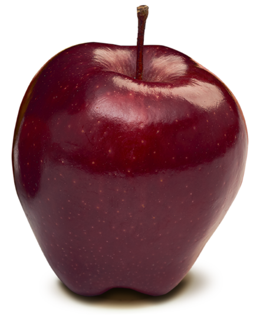
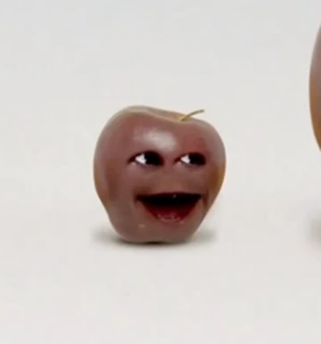

Red Delicious apples are one of the most recognizable apple varieties in the world. They are known for their deep red color and tall, conical shape that sets them apart from other apples. Their skin is thick and glossy, giving them a striking appearance that makes them popular in grocery stores. While they are visually appealing, they are often described as having a mild and slightly sweet flavor.
These apples are commonly eaten fresh rather than used for baking or cooking. Their crisp texture makes them enjoyable as a snack, especially when chilled. They are also a popular choice for salads, as their firm skin helps them hold their shape. Overall, Red Delicious apples are a classic variety appreciated more for their look and crunch than for complex flavor.
 | China | United States | turkey |
|---|---|---|
| 197 billion apples | 97.5 billion apples | 14 billion apples |